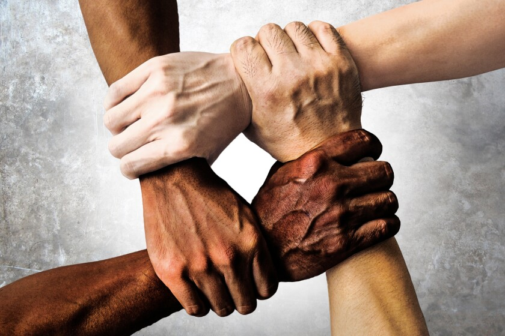

What can be done?

As a society, it is up to us to reverse the effects of climate change, saving ourselves and our planet Older adults can contribute by providing wisdom and community-level action, while world leaders can drive systemic policy and emissions reductions.
What can world leaders do?:
Setting laws in place is one of the most efficient ways to progress our lives as a whole. Movements to reduce greenhouse gas emissions would cut the issues that cause climate change substantially as well. Leaders must show that they care by promoting policies that empower both younger and older people to participate in climate saving solutions. If possible, world leaders must also work together internationally to protect ecosystems such as rainforests and other populations.
What can everyone else do?:
Even though most people do not have the power to create laws, there are still things that can be done to better the planet we live on. Reductions in energy-efficient appliances can help. Most cars pollute the environment as well. Walking, carpooling, biking and using public transportation are all ways that we can help. Eating more plant-based meals can also help as it has a smaller carbon foot print to do so. Planting trees improves local ecosystems. Engaging in community or political action is also very important. You can encourage your school, workplace or town to look into climate-friendly policies and laws.
It is imperative that we take the steps as a community to preserve the life of our planet. Without it, where else would we be? This planet is our only home, and where we belong. But if we continue to cause climate change to get worse, we may soon no longer have a place to live, and a planet to call home.